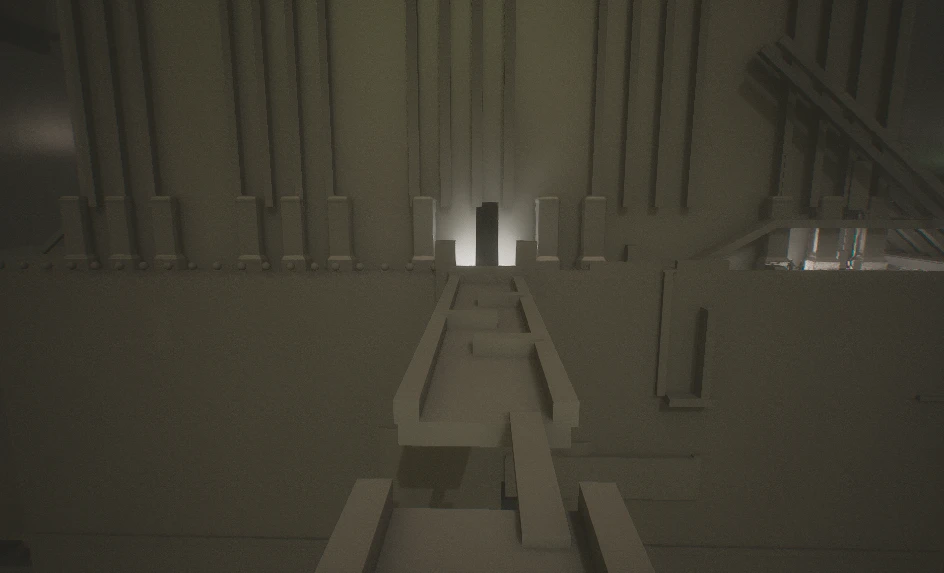
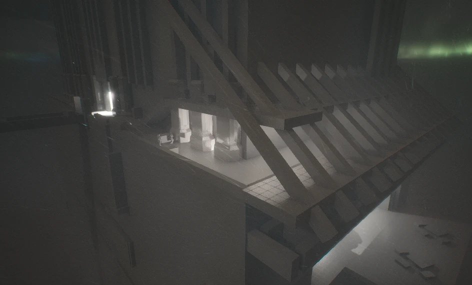
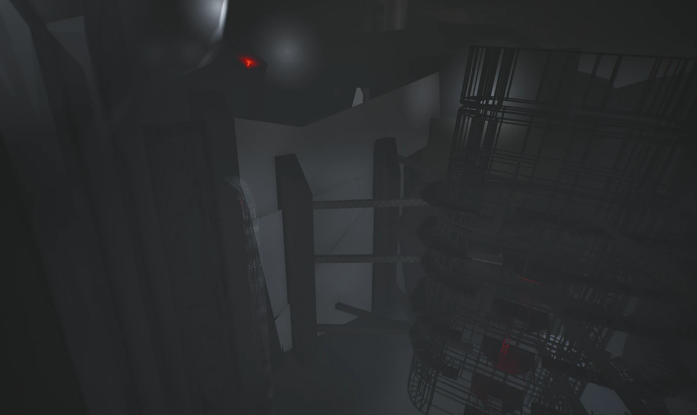
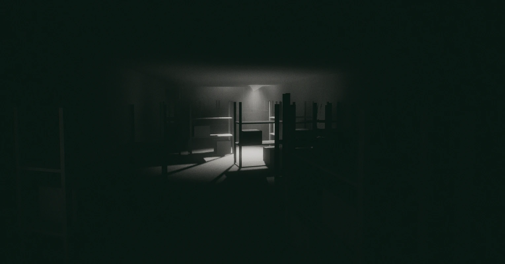
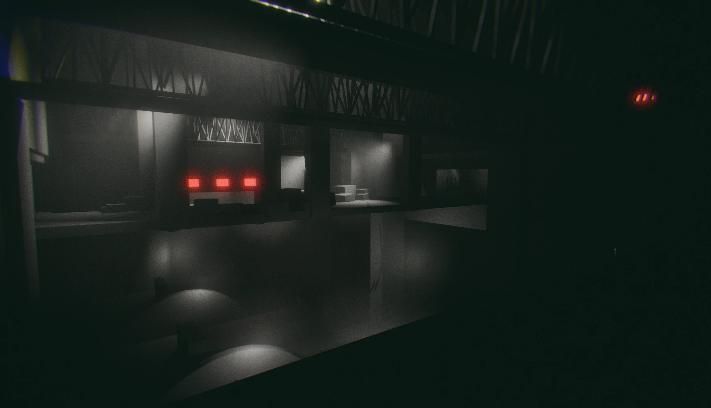
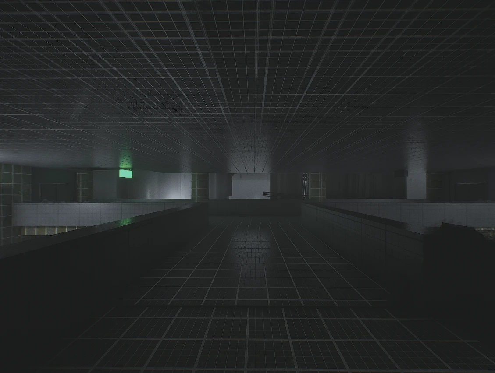
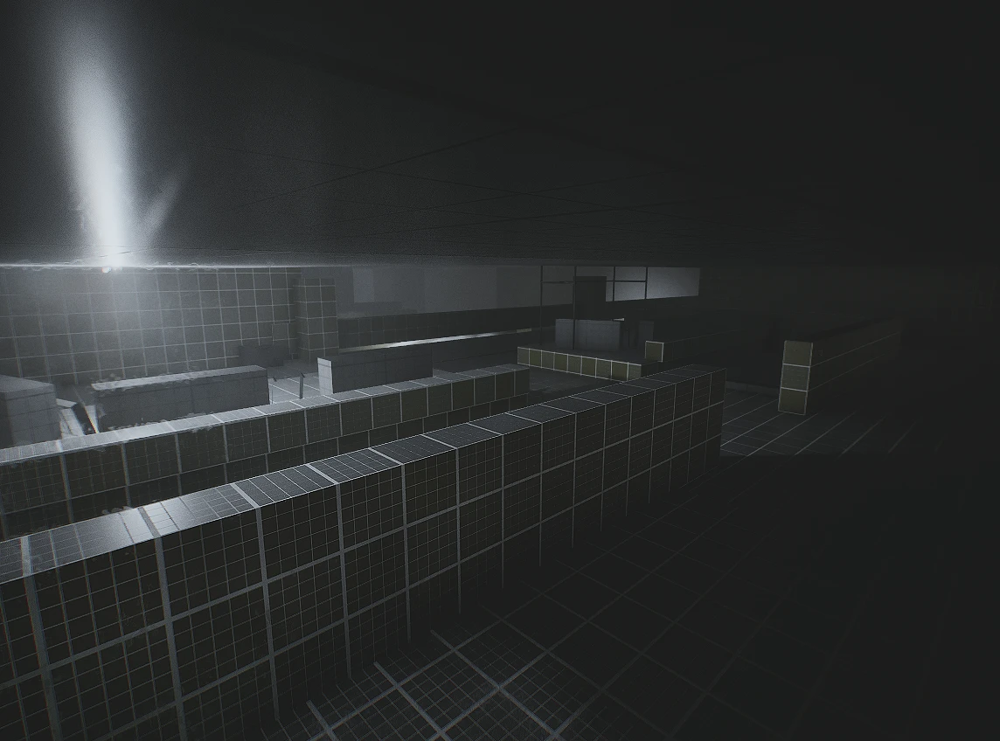
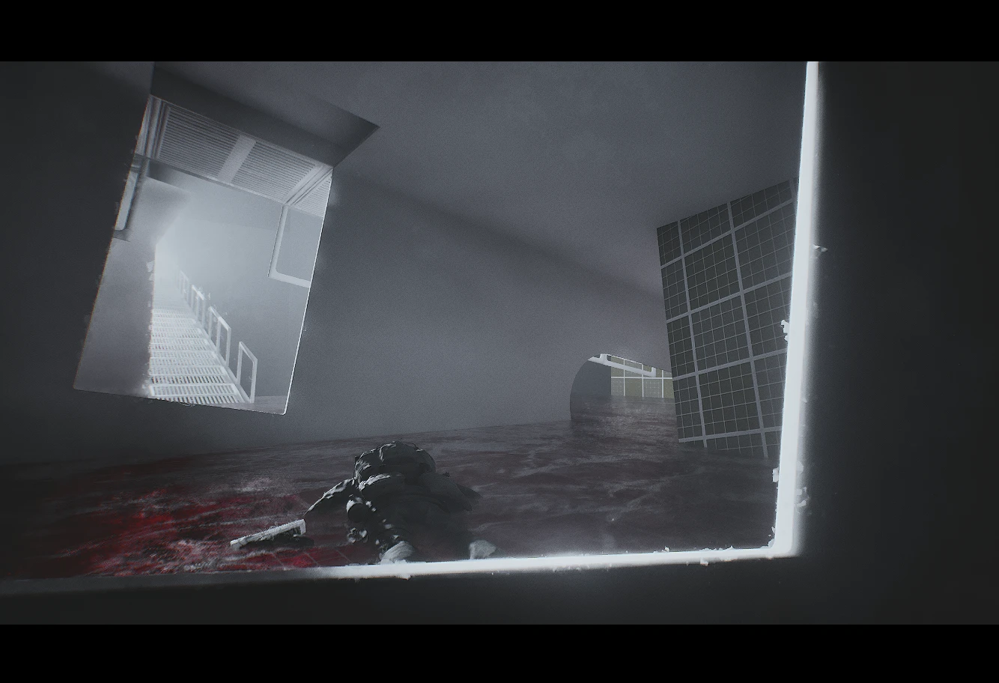
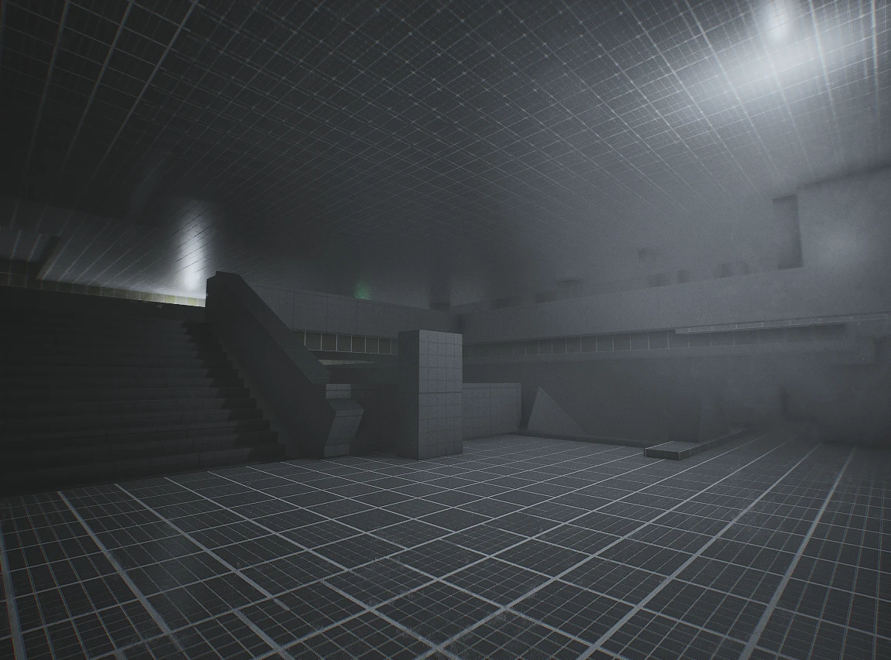
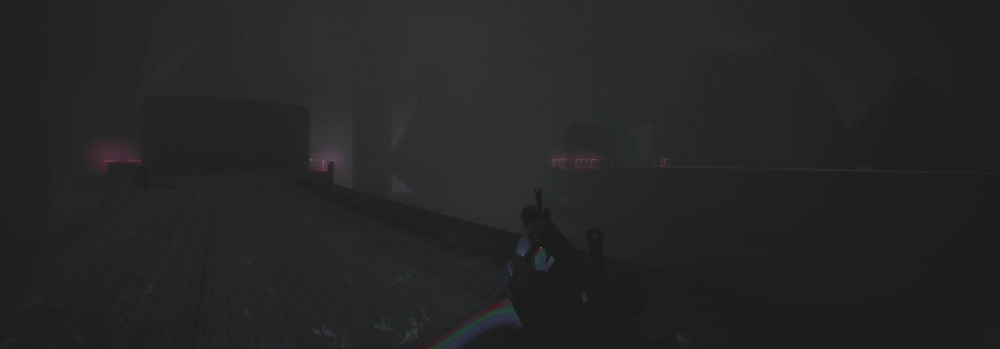

01Context
Feature context
Obversus: Umbra is a first-person shooter in development at GrinGate Studios, built in Unreal Engine 5. Its main map is a single, large hub: a Dam, the city structures around it, and several underground layers below.
I joined the project as Game & Level Designer and own the blockout and level design of the spaces on this page. Every image here is my greybox, captured in engine. Final art, props and the final lighting pass will come later. The goal of this stage is that the level already plays and reads well without them.
- Project
- Obversus: Umbra
- Studio
- GrinGate Studios
- Status
- In development, greybox
- Engine
- Unreal Engine 5
- My role
- Blockout, level design, gameplay lighting
- Period
- 2026 to now
Work in progress. Materials are greybox grids and temporary colours, and some meshes are placeholders. Images are shared with the permission of GrinGate Studios.
02The goal
One structure, many layers, zero signs
The Dam is the backbone of the map. The player moves through it from the top of the wall, through the turbine hall inside it, down to the sewers and the flooded layers under its foundations. The level must do three things at the same time:
- Orient. The player must always know where they are relative to the Dam, even deep underground.
- Guide. The golden path must be clear without arrows, HUD markers or text.
- Unsettle. The space should feel too big, too empty and slightly wrong, which supports the tone of the game.
In greybox, I have only three tools to do this: shape, light and composition. The next three chapters show how I use each one.
03Shape
Reading a megastructure
A Dam is a simple shape: one long, tall wall. That simplicity is useful. A single dominant form becomes a landmark that the player can see from most of the map. My work was to keep the big shape clean and to put the complexity into the layers around it and inside it.
One dominant form per area
The wall is vertical. The turbine hall is a long box with repeating trusses. Stair towers are round cages. Each area has one shape that the player remembers.
Scale contrast
I made the Dam wall taller during revisions and put it on large supporting pillars. Small catwalks, stairs and railings on its face show how big it is.
Rhythm and repetition
Trusses, pillars, niches and carved figures on the wall repeat at a fixed interval. Repetition makes a space feel built and lets one broken element stand out, such as a crack in the wall or a crashed monorail.
Silhouette first
I check each area with no light detail and flat grey. If I cannot tell the floor, the path and the threat apart by silhouette alone, I change the geometry, not the lighting.





04Light
Leading the player with value and colour
I light the blockout early, before the layout is final. Light changes how a space plays, so I want to test both together. My rule is simple: keep most of the frame dark, and spend light only where it means something.
Value as a path
The eye goes to the brightest area first. In the storage room below, one overhead light makes a pool on the floor, and the shelves cut it into long shadows that point forward. The player walks into the light with no other cue. In large halls, I place a few hard key lights on the floor of the golden path and let the rest fall into shadow.
Colour as a language
Colour in this level is never decoration. I use a small, fixed set of meanings so that the player learns them quickly:
- White and cool grey: neutral space, the path, safe light.
- Red: danger, machinery and alarms. Three red signals in the hangar give a focal point. In alert state a whole catwalk turns red.
- Green: exits and progress. One green exit sign at the end of a long, dark tiled corridor is enough to pull the player forward.
Light as a landmark
A strong shaft of light through fog becomes a vertical landmark. The player can see it over low walls and use it to find the way through a maze-like area.







05Composition
Framing the player's view
The player controls the camera, but I control what the camera finds. At each entrance, landing and turn, I decide what the first frame shows. I build these frames on purpose and then check them in engine from the player's eye height.
Frames inside the frame
Doors, windows and holes in walls work as picture frames. They isolate the next goal and hide what is not important yet.
Leading lines
Railings, tile grids, beams and the edges of ramps all point to the next objective. The grid material is not only a measurement tool: it is also perspective.
Depth layers
Fog separates foreground, middle ground and background. The near area is dark, the goal is in the lit middle ground, and the far structure is a soft silhouette.
Reveal and reward
A tight corridor opens to a large hall seen from above. The first view from a balcony shows the whole route, so the player can plan before going down.






06Spaces
Spaces of the Dam
The hub is a chain of spaces with different scale, light and mood. I keep the contrast between neighbours high, so each transition feels like an event.
- The Dam wall. The exterior face with catwalks and stairs, carved figures in niches, visors and a ceiling over the top route. Later revisions made the wall taller, added a crack and a crashed monorail as story beats, and set the whole structure on supporting pillars enclosed by rock.
- Turbine hall and turbine chamber. A long interior volume with turbines and water breakers, crossed by catwalks on several floors. I added extra routes so that combat can flow on more than one level.
- Generator hangar and connector corridors. Underground hangars and corridors that link the underlayers. A modular connector room keeps transitions consistent.
- The sewers. A cascading canal with bridges and catwalks, open columns and a golden path from the starting pipe to the elevator shaft.
- Lobby and elevator. A building lobby reached by an elevator from the control room. A Level Sequencer drives the ride, and its speed is tuned for pacing.
- Disposal pit and outflow canal. A deep pit made walkable down to the outflow canal, with a corridor that attaches to the outside of the Dam.
- Flooded layers. Tiled, half-sunk rooms and tunnels with water and blood. Reflections double the light, and the low water line makes the rooms feel drowned.

07Greybox kit
A metric kit that keeps the level honest
A large level changes every week. To change it fast without losing gameplay metrics, I built and maintain a modular whitebox kit. Every mesh name carries its size in centimetres, so the content browser is also a metrics sheet.
| Piece | Size (cm) | Why it exists |
|---|---|---|
| Cover block | 200 × 50 × 110 / 140 / 200 | Low, medium and full cover heights for the FPS character, so cover reads the same everywhere. |
| Climb block | 200 × 50 × 140 / 180 | Fixed heights for mantle and climb tests. |
| Prone space | 60 × 220 | Checks that a gap fits a prone player. |
| Jersey barrier, pipe bundle, shelf rack, filter tank | Various | Cover with a recognisable silhouette, so encounters read as places, not boxes. |
| Column, arch, niche, pediment, plinth | Wall module 400 wide, 376 high | An architectural set for the monumental parts of the Dam. |
| Ceiling, floor, curb | 200 and 400 grid | Snaps to the same grid as walls. |
Material tiers
The whitebox materials are not only colours. A set of five tiers (open, thin, medium, solid, armored) shows how much protection a surface gives. A tester can see at a glance which wall stops bullets and which does not, long before final materials exist.
Tools I added
- Packed Level Actors for repeated set pieces: stair towers, fire escapes, catwalks, the cascading canal, the turbine chamber and security gates. Change one, and every copy updates.
- A scalable barrier Blueprint that keeps its proportions when scaled.
- Text and mesh billboards for notes in the level that always face the camera, so the team can read intent during playtests.
- A PCG spline tool that spawns an organic tunnel kit along a spline, with correct corner pieces and loop points.
08Pipeline
Keeping a huge greybox fast in Unreal
- World Partition. I migrated the whole greybox to World Partition early, so the team can work in parallel and the map streams correctly.
- Data Layers. Buildings, the sewers and enemy placement each live on their own Data Layers. I can hide a full sector or test a different enemy layout without touching geometry.
- Playable phases. I made the level playable end to end in phases, with working elevators and floors at each step, instead of polishing one area at a time.
- Collision passes. Complex organic kits use complex collision as simple where accuracy matters, and simple collision where performance matters.
- Bookmarks and golden path. Camera bookmarks at key frames and a marked golden path let anyone on the team jump to a view and check it.
- Automation. I use MCP servers connected to the editor to automate repetitive greybox work, imports and documentation.
- Test maps. Separate maps for parkour metrics, co-op and PvP tests, and audio triggers, so experiments do not break the main level.
09What I learned
What I learned
Light the greybox early. A path that reads well in flat light can disappear in a dark game. Lighting during blockout found layout problems that I would not see otherwise.
Scale lies in the editor. A wall that looks huge from the editor camera can look normal from eye height. I now check every major space in play mode, with the real character, before I approve it.
A kit is a contract. Fixed metrics in the asset names saved many discussions with design and combat. When everyone uses the same cover heights, the level stays consistent.
Next steps. Encounter tuning in the turbine hall, the handover of key frames to the art team, and a full lighting pass that keeps the colour language from the greybox.